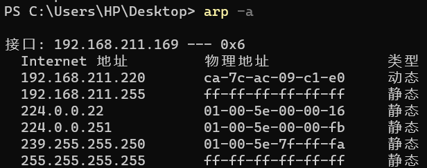

[TCP/IP详解]:地址解析协议
简介
一台主机如果要将自己的链路层帧发送给另一台主机，光知道目的IP地址是不够的，还需要直到主机在网络中的有效硬件地址
硬件地址:
硬件地址, 又被称为MAC地址，链路层地址，物理地址，以太网地址, 是由设备制造商定义的，它会存储在设备的永久性内存当中，永远不会改变, 大小为48位. 对主机而言，一块网卡就对应着一个MAC地址. 当两个局域网的主机之间传递以太网帧的时候，由以太网地址确定该帧的目的接口
IP地址:
IP地址由网络管理员进行分配，当移动设备在不同子网之间进行移动时，IP地址也会发生改变
1. ARP
**地址解析协议(ARP)**提供了一种在IPV4地址到MAC地址之间的映射
ARP从设计上是支持多种协议的，但大多数情况下都是用来执行IPV4到MAC地址的映射
工作机制
ARP的工作基于链路层广播, 下面考虑当应用程序想要访问IP地址为10.0.0.1的主机
如果10.0.0.1与当前主机位于同一个子网，那么直接进行链路层广播，否则，需要进行路由器中转
在共享的链路层网段之上，ARP向该网段上的其它所有主机均发送一条ARP请求，即广播
向它们询问谁当前的IP地址为10.0.0.1
如果有主机接受到ARP请求并且其IP地址为10.0.0.1, 那么向发送主机发送ARP响应，是单播，响应中包含了自己的MAC地址
发送方收到响应，建立TCP连接，向目的地址发送报文
点到点链路(PPP)并不使用ARP, 在PPP协议中，当链路建立完毕之后，就不需要使用MAC地址了
2. ARP缓存
主机和路由器都会为自己的每个网络接口维护一个ARP表(ARP缓存), 当主机/路由器接收到一个ARP请求帧时， 会使用其中的
源IP地址和源MAC地址来在该表中记录一个条目, 当下一次需要向该IP发送报文时，就可以直接使用缓存得到对应的MAC地址，不必进行
广播
arp命令
在Linux或者windows当中都提供了arp命令用于查看当前主机的每个网络接口上的ARP表
Linux
其中,
ether代表接口类型为以太网接口，Flags Mask有3种:- C: 动态学习产生的
- M: 手工输入的
- P: 表示“发布”， 常用于代理ARP
Windows

与LInux类似
3. 超时
ARP重传
当一个ARP请求在指定时间内没有收到回应时，就会执行重传操作，而这个重传的时间看系统的实现, [RFC1122]建议设置为1秒一次
当发送主机没有收到ARP响应的时候，会在自己的ARP表中建立一个不完整条目
ARP缓存超时
ARP表中的条目可能是陈旧的，通常情况下完整条目的存在时间是20分钟，而不完整条目的存在时间是3分钟
4. 代理ARP
代理ARP使一个主机代替其它主机方ARP响应帧，这样做可以使得发送方认为做出相应的系统就是目的主机，该技术可以用于
在物理网络上隐蔽自己，但并不常见
5. 免费ARP与ACD
免费ARP
免费ARP指的是这样一种ARP请求帧: 其目的IP地址就是自身的IP地址， 免费ARP用于实现一些特殊的用途
确认是否有其它主机配置了相同的IPV4地址
通常情况下，主机并不希望免费ARP接收到响应报文，但有时主机会接受到其它主机的警告报文，用于提醒主机使用了重复的IP地址
更新其它主机的ARP缓存
ACD
**IPV4地址检测冲突(ACD)**，如果网段中有着相同的IPV4地址，那么使用ACD协议可以解决这个问题, ACD使用了两个分组:
- ACD探测分组 ACD探测分组用于查看候选IPV4地址是否被其它系统所使用
- ACD通告分组 ACD通告分组用于通告发送方使用候选IPV4地址的意图
初次之外, ACD协议还会在主机接收到一个ARP响应帧的时候检查发送主机的原地址是否与自身的IP地址重复
6. ARP帧
本博客所有文章除特别声明外，均采用 CC BY-SA 4.0 协议 ，转载请注明出处！